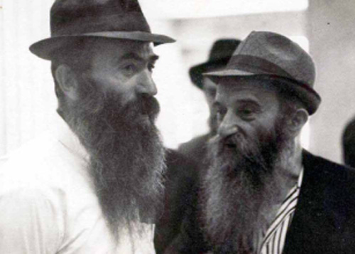

The Rebbe Performs Miracles in Siberia
He went through the usual “routine” of a Chabad Chassid in Soviet Russia – Jewish activity, arrest, exile to Siberia. But there, in the frozen tundra, he experienced great miracles. * While preparing this article about R’ Yisroel Konson, the Rebbe’s miraculous intervention was discovered.

The Chassid, R’ Yisroel Konson was born in the Chassidic town of Nevel in the Ukraine in the year 5666/1906. His parents, R’ Tzvi Yosef and Baila, instilled Chassidishe Yiras Shamayim in him. He never attended public school. He learned in Yiddish and Lashon HaKodesh, and for many years he did not know how to read and write in Russian. Only when he needed a passport, for which one had to be literate in Russian, did he learn how to read and write in that language.
In his youth, he learned in secret yeshivos in Nevel. His friends were R’ Mendel Futerfas, R’ Dovid Skolnik, R’ Asher Kravitzky, and R’ Boruch Shifrin.
The friendship that began in their youth continued for many decades afterward. In the final months of his life, R’ Mendel Futerfas visited him and the two were highly emotional. The family members were moved to see the two of them fall upon each other’s necks and call one another by their childhood nicknames of Yisrulik and Mendele.
R’ Yisroel studied Nigleh and Chassidus assiduously and was one of the “scribes” who wrote the maamarim from which they made many copies that were distributed among the bachurim and Anash.
While learning in Nevel he studied sh’chita and soon after he was appointed as a shochet in some town. His being a shochet saved him from serving in the Russian army, for the law at that time was that someone who worked in a religious position was deemed to have no legal rights and was not given a place to live or medical care and was exempt from the army.
He saw the Rebbe Rayatz a few times and years later he would speak yearningly about the time when the Rebbe Rayatz parted from the Chassidim who had come to the train station in Leningrad to see him before he left Russia, at which R’ Yisroel was present. Even after the Rebbe left Russia, R’ Yisroel corresponded with him, which the government considered a serious crime. One of the letters, about building a mikva in the year 5689, was printed in Igros Kodesh volume 16.
DESPITE THE DANGER, A CHASSIDISHE HOME
R’ Yisroel married Gittel Labkovsy, the daughter of the Chassid, R’ Nachum, in 1932. In order not to have to desecrate Shabbos, he began doing home based piece work. Many of Anash did work like this, which was done in private houses, so they would not have to work on Shabbos. He did not make much money and so he studied photography. He did not make much money from that either and at a certain point, he began manufacturing berets in his house.
Although for many years he did not earn much, being a kindhearted man, he gave a lot of money to others, even when he and his family did not have enough.
His daughter, Mrs. Rivka Bisk, tells about his outstanding midda of chesed:
“In 5695, R’ Shmuel Notik was arrested. His wife found it difficult raising her children by herself and so she sent her two daughters, Rochel and Sarah, to my parents to live with us. Rivka Volovik, who was a “living orphan,” also lived with us for years, until she married. To me, they were all like big sisters, an inseparable part of the family.
“We always had farbrengens at home, despite our financial situation. They occurred often because our apartment had a separate entrance so that when Chassidim came to farbreng, the neighbors did not notice.
“Among the Chassidim who came to farbreng were R’ Yona Cohen (Poltaver, may Hashem avenge his blood), R’ Avrohom Drizin (Maiyor) a”h, R’ Bentzion Shemtov a”h, and R’ Nissan Nemanov a”h who was one of the main farbrengers. I was a little girl at the time and my parents would tell me to go to sleep, but I always peeked curiously into the other room and watched the faces of the important guests who visited our home. The sight of Chassidim farbrenging into the night is etched into my mind forever. These farbrengens took place despite the great danger. My father knew good and well that his house was under surveillance.
“Another episode that I remember is the bris that took place in our house for one of the sons of R’ Bentzion Shemtov. The windows were covered with thick curtains so that nobody could see what was going on. I, as a little girl, innocently asked my father, ‘A bris is done by day and not by night, so why is the house being made dark?’”
“YOUR GRANDFATHER SAVED US”
After the Nazis invaded Russia, tens of thousands of civilians fled into the interior of the country. Many people, including Chassidim, boarded trains that took them to places far from the front lines.
R’ Yisroel could not escape since the army decided to draft him. In the meantime, his wife and daughter escaped from Moscow to Tashkent while he remained in Moscow. He finally managed to gain an exemption when he appeared as an invalid suffering from epilepsy. He then traveled to Tashkent where he reunited with his family.
The Konson family lived in the Corsu neighborhood where other Chassidic families lived who had escaped the battlefront, including the family of R’ Isser Kluvgant, R’ Chaikel Chanin, R’ Zalman Sudekevitz, and others. The Corsu neighborhood was very poor and the living conditions dismal. Therefore, R’ Yisroel moved with his family to live in the old city of Tashkent where many Chassidim lived.
Hunger and disease were the lot of many refugees who arrived in Tashkent, including many Jews. The refugees did not have a way of supporting themselves and did not have a way of buying food. Having no choice, R’ Yisroel sold everything he owned, as his daughter Rivka relates:
“A lady came to our house and within a few minutes, my mother had agreed upon a price for a tablecloth. The tablecloth was removed and given to the stranger. We were left without a tablecloth but with the money she received, my mother bought food for me and medicine for the typhus I had.”
As he did in Moscow, R’ Yisroel helped many Chassidim and saved many lives. Rivka relates:
“A little over ten years ago, my son moved to Toronto. He rented an apartment from R’ Eliyah Akiva Lipsker a”h. Mrs. Rochel Lipsker visited him and she realized that he was the grandson of R’ Yisroel Konson. She was so excited by this and said, ‘Your grandfather saved me and my husband from death. During the war, we were sick with typhus. We were hospitalized in Tashkent but there was nothing to eat. We were very weak and under these circumstances our health was even more precarious. When your grandfather heard about this, he asked your grandmother to cook some cereal for us. He would come every day and stand near our room and put the plates there and then leave, since typhus is highly contagious and dangerous. Thanks to this, we got our strength back and we recovered.’”
THE INTERROGATORS LIED
At the end of World War II, R’ Yisroel and his family returned to Moscow. He was arrested a few months later by the secret police.
His daughter tells of his arrest in the middle of the night:
“I remember the arrest as though it happened today. Late at night I woke suddenly to the sound of screams. There were three secret agents in our living room who told my father that he was under arrest. They conducted a thorough search of the house in the course of which they confiscated s’farim, sifrei Chassidus, and manuscripts. Then they found a Tikkun Leil Shavuos. They flipped through it and cheered. We could not understand why they were so excited over finding it. Only later did my father tell us that the book had been given to him by a family who had crossed the border into Poland and the book had their name in it. This was proof that my father had been in contact with them. This was one of the accusations made against him during the interrogations.
“In addition, they accused him of hiding the Chassid, R’ Mordechai Dubin. It was Pesach 1946, a few weeks before the arrest, when my father met R’ Mordechai Dubin in the big shul in Moscow. R’ Mordechai asked my father to host him during Pesach and my father was glad to do so, despite knowing that the authorities were after R’ Mordechai. The first night of Pesach passed peacefully, but the second night the NKVD told the landlady (from whom we rented the apartment) that undesirable people were being hosted in her home.
“The woman quietly told my father about this. On Motzaei the second day of Pesach, R’ Mordechai left our house and hid somewhere else. When my father was arrested, he was inculpated for hosting a ‘criminal.’
“My father sat in Lubyanka, a large prison in the center of Moscow. My mother was very sick and could not leave her bed. I, who was all of 13, went to the prison to try and find out my father’s fate. He spent months in prison and every month I brought him a package with kosher food.”
R’ Yisroel was tortured mercilessly for ten months so that he would incriminate other Chassidim. He kept quiet and did not reveal a thing. They prevented him from sleeping for many nights, they gave him medications to confuse him, and nevertheless, he remained strong. At a certain point they had him hear screams of a girl pleading for her life and they told him that it was his only daughter he was hearing. Then they told him that she did not withstand the torture and had died. His heart broke and he tore kria.
According to the severity of the crimes he was accused of, it was clear that he would be given at least ten years in exile like many other Chassidim. The first miracle was the sentence. After months of suffering, he was sentenced to “just” three years in exile and hard labor in Siberia.
“I heard about this sentence when I arrived with a package of kosher food. The jailors told me that my father had been transferred to another prison in Moscow.
“That day I met with the prosecutor responsible for my father’s file. He told me that the period of time my father had been imprisoned in Moscow was considered part of the sentence. Another miracle was that they did not take our house and property away from us as they did to some prisoners.”
HARD LABOR IN SIBERIA
After an exhausting trip, R’ Yisroel arrived in a forced labor camp in the Sverdlovsk district in Siberia. Like many others, he was given the backbreaking work of cutting trees in the forests. Every morning he would walk through the deep snow with a group of prisoners into the forest. The conditions were horrendous with snow falling constantly. The people in the front of the line had to break a path through the snow drifts which were no less than three feet high. Prisoners would stumble and fall into ditches covered with snow, which they had no way of avoiding. A prisoner who veered slightly from the road was shot in the head by the armed guards.
In the forest, the prisoners were divided into groups with each group leader given an electric saw. After a tree was chopped down, they had to lop off the branches. The thick trunk was dragged by ropes to the staging area where they had to arrange the wood in piles before the tractor came to haul it away.
A typical daily sight was prisoners collapsing and dying of exhaustion as a result of the hard labor, the arctic cold, the malnutrition, and disease.
One day, a thick branch fell on R’ Yisroel’s foot. His foot swelled up and he suffered greatly. At first, he was accused of injuring himself on purpose so he would be exempt from working. However, after an interrogation of the prisoners on location, they clarified that it had happened due to the carelessness of another prisoner. R’ Yisroel received medical treatment and the doctors said he could not continue chopping trees. Another Jewish prisoner, who was in charge of manufacturing picture frames, offered to have him join that work which was much easier.
About a year after he was exiled, the camp authorities decided to allow him to live in a nearby town and to work as a bookbinder and picture-framer, on condition that he did not leave the town. Life there was incomparably easier than in the camp. He could buy kosher food and write letters home more freely. For Pesach, they permitted his wife to meet with him and give him matzos which he shared with other Jewish prisoners.
“All his life,” said his daughter, “my father said that in Siberia he saw big miracles. The biggest miracle of all was that although his foot healed relatively quickly, he was not forced to return to work and instead was allowed to do the light jobs which every prisoner wished for.”
Why did he merit these miracles? We don’t really know but it is interesting that just at that time, the Rebbe mentioned R’ Yisroel’s name to the Rebbe Rayatz at a farbrengen on the Chag Ha’Geula, 12 Tammuz. This was done at the request of R’ Zalman Butman, a friend of R’ Yisroel, when he met the Rebbe in Paris in 5707/1947.
In a letter from Tamuz 5707 (Igros Kodesh volume 2, letter #273), the Rebbe writes to R’ Zalman Butman:
“…As promised, I mentioned to the Rebbe, my father-in-law Yisroel ben Baila HaKohen of Nevel, at an auspicious time, Chag HaGeula, 12 Tammuz. Of course I mentioned that this was at your impetus and my intention was so that your name would also be mentioned.”
Amazingly, it was around that time that R’ Yisroel experienced all those tremendous miracles.
ARRESTED AGAIN
The years of exile in Siberia ended, but the wanderings of R’ Yisroel Konson and his family did not. R’ Yisroel was released for Pesach 1949, but was forbidden to live in large cities or near them, i.e. 100 kilometers from a major city.
Upon arriving home, he found no alternate place to live and in the meantime, he lived in his house in Moscow. Just one week later, he was arrested for the offense of living in a large city. He was released after signing that he would leave the city within 24 hours.
At first, he opted not to leave Moscow but hid in the home of his brother-in-law, R’ Elchanan (Chonye) Labkovsky. A short while later, he moved to live with a relative in Tashkent.
Then he heard that they were after him there too, and he immediately packed and escaped to a small town called Yalguya. Throughout this time, his family remained in Moscow.
His years in exile continued until 5713 when Stalin died and the Soviet government pardoned hundreds of thousands of former prisoners, including R’ Yisroel. Then he was allowed to live where he pleased and a relatively calmer period ensued.
For a while he lived in Riga and then returned to Moscow where he was a shochet and supplied meat to Lubavitchers living there. Despite the great danger, and despite having already experienced torture, imprisonment, and hard labor, he still did this holy work. He was also moser nefesh for the chinuch of his grandchildren. Every day, he traveled a great distance from his house to their house in order to teach them Torah.
At that time, there weren’t many Chabad families in Moscow, but those who lived there were particularly close. Every Motzaei Shabbos Mevarchim they had a joint Melaveh Malka at one of the families’ homes, attended by men, women and children. R’ Yisroel was one of the regulars. He always encouraged people to bring the children and said that if they fell asleep, at least their neshamos would hear and understand.
These Melaveh Malka meals were held in the homes of: R’ Naftali Kravitzky, R’ Yehuda Botrashvili, R’ Shneur Pinsky and R’ Yitzchok Wolfowitz. Only Lubavitchers who knew one another well attended these farbrengens. Mekuravim could not be invited.
The Melaveh Malka began with a sicha from the Rebbe. The contents of sichos were transmitted by “tourists” who visited the Soviet Union. These tourists were Chabad Chassidim serving as emissaries of the Rebbe, and at great personal risk, they brought in religious items, sifrei Chassidus and sichos of the Rebbe.
One time, R’ Yisroel met one of these tourists when he went to the mikva. The tourist quietly asked him why he didn’t leave the Soviet Union. R’ Yisroel said they did not allow him to. The tourist disappeared and R’ Yisroel met him years later in 770.
TEACHING CAREER
For years, R’ Yisroel wanted to make aliya with his family, but the government did not allow it. It was first in 1971 that he was able to leave Russia for Eretz Yisroel with his wife, daughter, her husband, R’ Eliyahu Bisk, and their children.
When they arrived at the airport in Lud, Anash who met them suggested that they live in Nachalat Har Chabad, where many Lubavitcher immigrants lived. However, the Jewish Agency pressured him to live in central cities of the country. As a Chassid, R’ Yisroel went to live in Nachalat Har Chabad after being told the Rebbe’s directive that immigrants settle there.
He was 65 when he arrived. He had been through a lot. Although he was eligible for a pension, he chose to continue working in various holy fields. When he saw that he would not get work as a shochet, he prepared boys for their bar mitzva and taught in the elementary school in Nachalat Har Chabad. The boys loved him and he loved to teach them Torah.
He fell sick with cancer two years before he passed away, and suffered greatly. Aside from his closest family members, nobody knew of his illness and he continued to teach. Some people noticed that when he walked from his home to school he would stop now and then to rest. His students said that occasionally he would sigh during the lessons, but he continued teaching with courage, devotion, and love until he took to his bed.
He passed away on the 10th of Teves 5737 and was buried on Har HaZeisim. May this role model of mesirus nefesh be an example to Chassidim for generations to come.
WITH BLANKETS OVER OUR HEADS
R’ Zushe Gross of B’nei Brak related:
The Chassid R’ Yisroel Neveler was a cousin of R’ Yisroel Konson. He once described his cousin as a very clever Chassid.
When I knew R’ Yisroel, I noticed that he never sat at the head of the table at farbrengens, even though what he said often drew the attention of the people who crowded around him. He knew numerous Chassidishe stories and inyanim in Chassidus and would sometimes farbreng for hours into the night.
When he escaped from Tashkent, I traveled with him on the train for five or six days. I was a young bachur and during the long trip I heard many Chassidishe stories from him as well as what he endured during his imprisonment and exile to Siberia. I remember the story of his tzitzis in Siberia. The police confiscated religious items belonging to prisoners. R’ Yisroel decided that he had to fulfill the mitzva of tzitzis regardless and he found a woman who knew how to spin wool. According to his instructions, she wove threads which he attached to a four-cornered garment. Thus, he continued fulfilling the mitzva of tzitzis in the labor camp in Siberia.
On that same trip, we were afraid to put on t’fillin in the train compartment lest our fellow travelers tattle on us. R’ Yisroel found a way out of that too. Every morning, we would pull the blanket over our heads and put t’fillin on and daven Shacharis while lying down.
Shneur Zalman Berger. "The Rebbe Performs Miracles in Siberia." Beis Moshiach, no. 853 (October 24, 2012).